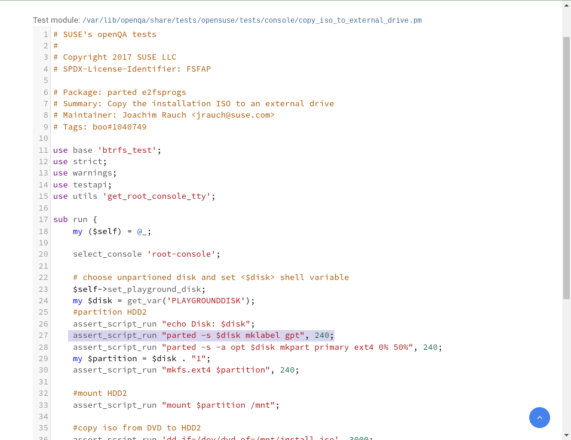

Demo - Code View

Slide 20/44
BACK
UP
NEXT
next: ( space / -> / page up ) | previous: ( backspace / <- / page down ) | next page: ( shift + page down ) | previous page: ( shift + page up ) | index: ( arrow-up )